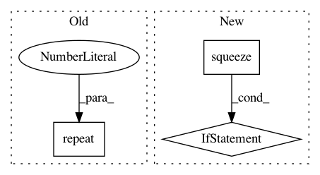

eb52df01d6fa9beb97d367ff091d32186c91ea95,geomstats/geometry/poincare_ball.py,PoincareBallMetric,log,#PoincareBallMetric#Any#Any#,144
Before Change
point = gs.to_ndarray(point, to_ndim=2)
if base_point.shape[0] == 1:
base_point = gs.repeat(base_point, point.shape[0], axis=0)
if point.shape[0] == 1:
point = gs.repeat(point, base_point.shape[0], axis=0)
After Change
log = (1 - norm_base_point**2) * gs.arctanh(norm_add)
log = gs.einsum("...i,...j->...j", log, (add_base_point / norm_add))
mask_0 = gs.isclose(gs.squeeze(norm_add), 0.)
if(gs.any(mask_0)):
log[mask_0] = 0
return log
def mobius_add(self, point_a, point_b):
rCompute the Mobius addition of two points.
In pattern: SUPERPATTERN
Frequency: 4
Non-data size: 3
Instances
Project Name: geomstats/geomstats
Commit Name: eb52df01d6fa9beb97d367ff091d32186c91ea95
Time: 2020-04-09
Author: gerald@pop-os.localdomain
File Name: geomstats/geometry/poincare_ball.py
Class Name: PoincareBallMetric
Method Name: log
Project Name: cornellius-gp/gpytorch
Commit Name: fbc57241b529ce921d664d86685935c4d3219feb
Time: 2018-11-05
Author: balandat@fb.com
File Name: gpytorch/likelihoods/noise_models.py
Class Name: HomoskedasticNoise
Method Name: forward
Project Name: geomstats/geomstats
Commit Name: ba9524030335193a49f0745be632fbe229e7614d
Time: 2020-04-09
Author: gerald@pop-os.localdomain
File Name: geomstats/geometry/poincare_ball.py
Class Name: PoincareBallMetric
Method Name: log
Project Name: OpenNMT/OpenNMT-py
Commit Name: 614c41e7f05d274991d95271c49a87af3fa2cf49
Time: 2017-12-22
Author: skywalker@postech.edu
File Name: onmt/Loss.py
Class Name: NMTLossCompute
Method Name: compute_loss